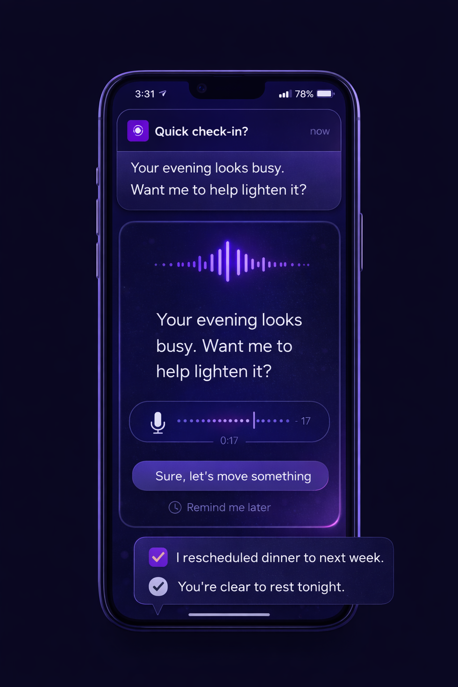

It monitors your calendar, predicts burnout before it happens, and takes small actions on your behalf — all through short, audio-first check-ins.
Not a chatbot. Not a planner. An action-taking AI agent with context and authority.
The problem
You say yes when you shouldn't
And you only realize it after you're already committed.
Too much, too late
You realize it's overwhelming when the damage is already done.
You cancel last minute
And feel guilty for days afterward.
You withdraw from relationships
Not because you want to — because you're depleted.
You're tired of managing it manually
Tracking what you can handle is exhausting in itself.
Most people don't need better advice.
They need help in the moment.
The gap
None of them own the problem. This does.
The solution
The system continuously models your personal tolerance for social activity using patterns from your calendar and behavior. When it detects overload, it checks in through a short audio snippet and can take small, permissioned actions to reduce strain — before burnout sets in.
It acts so you don't have to decide under pressure.

How it works
Guard
1 check-in
Your week is getting heavy
Audio-first
Lower cognitive load
Hearing is easier than reading when you're drained.
Works while you move
Walking, commuting, decompressing — it fits in.
Feels supportive, not managerial
A quiet voice, not another notification to dismiss.
Decide without opening another app
One tap. Listen. Respond. Done.
This is guidance, not another task.
What changes
Prevent social burnout before it happens
Reduce last-minute cancellations
Protect important relationships
Make boundaries easier to set
Remove guilt from saying no
You show up better —
because you're not already drained.
Trust & control
Actions are permissioned and reversible
You set hard boundaries — never cancel X, never act on Y
Clear explanation for every action taken
No medical claims, no judgment
The system is conservative by design.
Can reschedule meetings
With 24h notice minimum
Can decline new invites
When overload risk > 80%
Never cancel family events
Hard boundary — always protected
Who it's for
Socially exhausted, not wanting to withdraw
You want connection — just less of it on heavy weeks.
Professionals with packed calendars
Back-to-back commitments with no buffer built in.
Caregivers juggling obligation and energy
Constantly giving, with nothing left to protect yourself.
Tired of managing this alone
You've tried tracking it yourself. It doesn't stick.
If you've ever thought "I should have said no earlier" — this is for you.
Why it's different
Persistent personal energy model
Builds a deep understanding of you over weeks and months — not a blank slate every conversation.
Continuous monitoring, not prompts
It watches in the background so you don't have to remember to ask.
Autonomous, permissioned actions
Not suggestions. Real calendar actions — within rules you set.
Audio-first interaction
Designed for low-energy moments — not for when you're at peak focus.
Narrow objective: protect your energy
Not a general assistant. One job, done well.
General AI talks. This one acts.
Join the early access list. We'll reach out when we're ready for you.
You're on the list. We'll be in touch.
Private. Conservative. Built to stay out of your way.